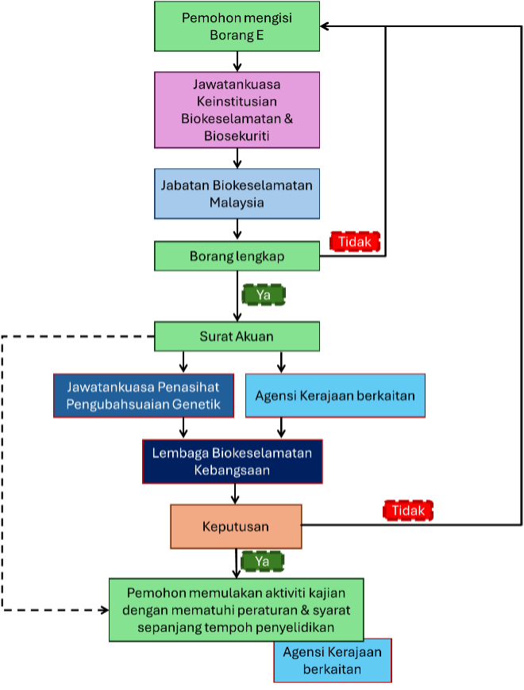

Pengenalan kepada Borang E
Borang E diperlukan untuk pemberitahuan dan pemakluman aktiviti kegunaan terkawal yang melibatkan organisma hidup yang diubah suai atau Living Modified Organisms (LMO) di Malaysia. Borang ini perlu diisi oleh penyelidik atau pemohon yang menjalankan aktiviti yang memerlukan kawalan biokeselamatan.
Aktiviti kegunaan terkawal termasuklah penyelidikan, pembangunan, pengeluaran, pembuatan, serta penyimpanan yang berkaitan dengan LMO.
Di sini, anda boleh mengisi mana-mana bahagian Borang E (Bahagian A-F) atau menetapkan peringatan untuk mengisi bahagian tersebut pada masa yang sesuai.
Maklumat Terperinci Mengenai Borang E
Sekiranya aktiviti kegunaan terkawal adalah untuk tujuan penyelidikan dan pembangunan, pemohon perlu terlebih dahulu melaporkan kepada Jawatankuasa Keinstitusian Biokeselamatan & Biosekuriti. Jawatankuasa ini bertanggungjawab untuk menilai dan meluluskan cadangan aktiviti dengan menyiapkan Borang Annex 2. Selain itu, pemohon juga perlu mengisi Borang E: Pemberitahuan/Pemakluman untuk Aktiviti Kegunaan Terkawal & Import Berkaitan LMO. Kedua-dua borang ini akan dihantar kepada Jabatan Biokeselamatan Malaysia.
Aktiviti kegunaan terkawal hanya boleh dimulakan setelah pemohon menerima surat akuan daripada Ketua Pengarah Biokeselamatan. Walaubagaimanapun, Lembaga Biokeselamatan Kebangsaan berhak untuk menetapkan syarat dan peraturan tambahan selepas menilai maklumat yang disertakan dalam borang permohonan.
Carta Alir Proses
Carta alir ringkas proses pemberitahuan bagi aktiviti kegunaan terkawal (Panduan mengisi Borang E)